Binance és Bitfinex vásárlási útmutató
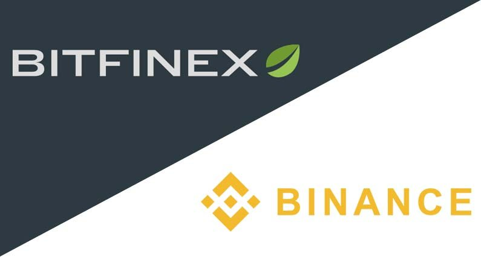Ebben az útmutatóban bemutatunk két piacvezető kriptopénz kereskedelmi platformot. Megmutatjuk hogyan is vásárolhatsz kriptopénzeket amelyek nem találhatók meg Coinbase-n vagy BitPanda-n.
Mindkét kriptopénz kereskedő weboldalon kriptopénz befizetésével lehet kereskedni (Bifinex-re elvileg lehet banki utalással is, azonban ahhoz verifikálni kell a személyazonosságodat ami jelenlegi körülmények között hónapokba telik). Ha még nincs kriptopénzed, akkor először Bitcoin-t vagy Ethereum-ot kell vásárolnod.
Bitfinex – Bitfinex egy Hong Kong-i kriptopénz kereskedői platform. Az egyik legnagyobb napi kereskedelmi forgalommal rendelkező weboldal.
Binance - Binance egy meglehetősen új platform. 2017 közepén indult. Mindenképpen megéri elővigyázatosnak lenni az új kereskedelmi platformokkal, Binance azonban nagyon gyorsan hatalmas felhasználói bázist épített. Ugyancsak az egyik legnagyobb napi forgalommal rendelkezik, köszönhető ez annak, hogy sok különböző kriptopénzt már a korai szakaszban elfogadnak.
Vásárlás Binance-n:
1) Regisztráció
Binance regisztráció. Csakúgy mint bármelyik másik weboldal regisztrációnál meg kell adnod egy e-mail címet és egy jelszót. Fontos odafigyelni, hogy erős és egyedi jelszavat válasszunk.
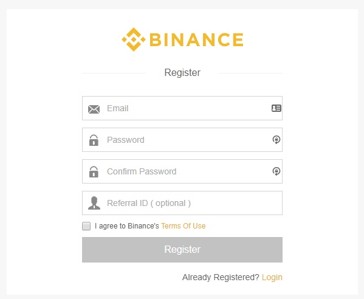2) Belépés
E-mail címed megerősítése után beléphetsz.
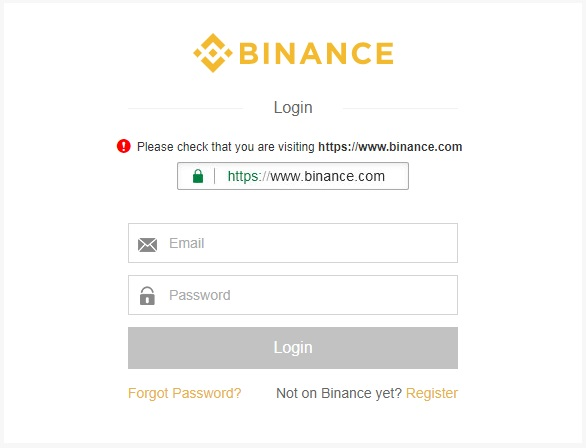3) További lépések
Érdemes beállítani a kétlépcsős azonosítást amely plusz biztonságot ad a Binance fiókodnak. Alapvetően kifizetési limited 2 BTC-nek megfelelő. Ha azonban elvégzed a személyazonosság verifikációt ez 100 BTC-nek megfelelő összegre nő.
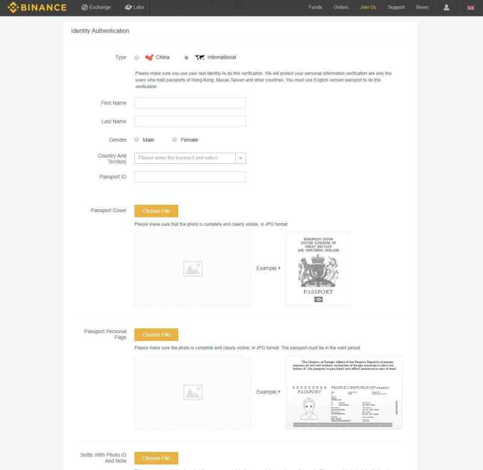4) Kriptopénz befizetés
Bőséges befizetési lehetőség közül választhatunk azonban kereskedési párok a Bitcoin, Ethereum, USDT (Tether), BNB (Binance Coin). A kiválasztott kriptopénznél klikkelj a „Deposit”-ra és a pénzt ezután el kell küldened a megadott címre.
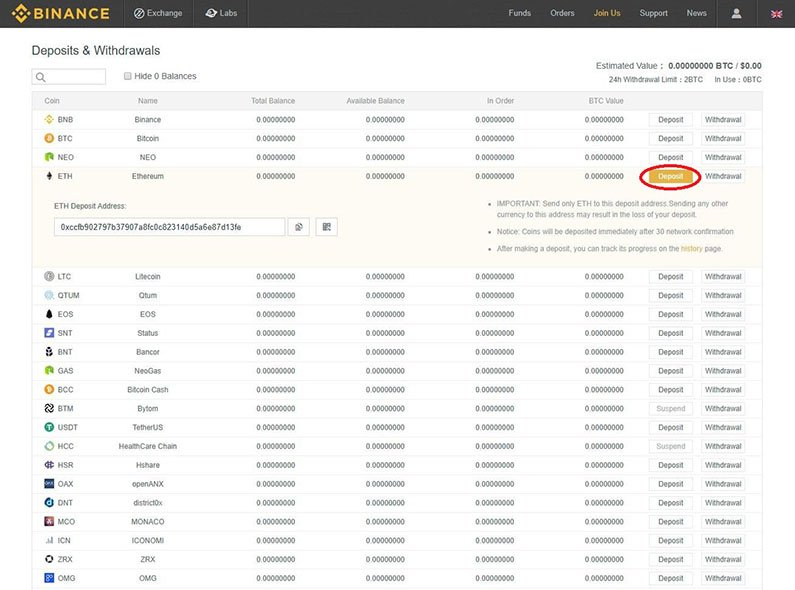Megnézheted a függőben lévő tranzakciókat amíg megerősítésre várnak.
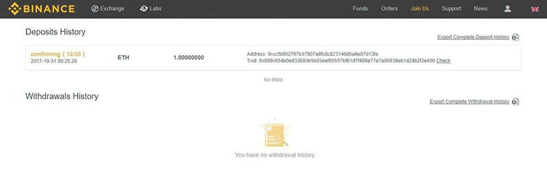Amikor a befizetésed megerősítésre került, látni fogod az egyenlegednél.
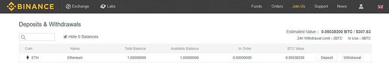5) Bitcoin vagy Ethereum-al való vásárlás
Miután befizetésed jóváírásra került, ideje a kiválasztott kriptopénzre váltani. Ezt az Exchange/Basic fülön teheted meg.
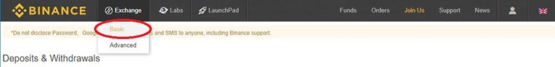Baloldalon kiválasztjuk BTC-t vagy ETH-t szeretnénk átváltani, majd kikeressük a kiszemelt kriptopénz párt.
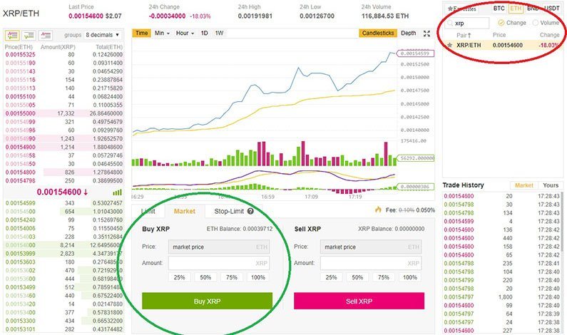Zölddel jelölt részen kiválaszthatod, hogy a kriptopénzed hány százalékát szeretnéd átváltani. Kiválasztod a rendelés módját Limit vagy Market. Majd a "Buy" gomb megnyomásával leadod a rendelést. Binane 0.1% díjjal dolgozik minden váltásért. Ez az egyik legjobb ár a piacon.
A Market rendelés a maximum mennyiségű kriptopénzt (példában XRP-t használunk) fogja megvásárolni piaci áron, az általad beállított Bitcoin-ért. A legolcsóbb XRP-t fogja megvenni amíg a teljes rendelés kész nem lesz.
A Limit rendelésnél te magad állíthatod be az árat. Azonban ha az ár nem esik a szintre amelyet kiválasztottál, akkor rendelés nem fog teljesülni. Ez kicsit haladóbb, ezért kezdőként válasszuk a Market rendelést.
Amint a rendelésed teljesült, egyenleged frissülni fog és kiutalhatod a kriptopénzedet a kiválasztott tárcára.
Vásárlás Bitfinex-en:
1) Regisztáció és belépés
Bitfinex regisztráció. Pofonegyszerű akárcsak Binence-n, ne felejtsd el beállítani a kétlépcsős azonosítást.
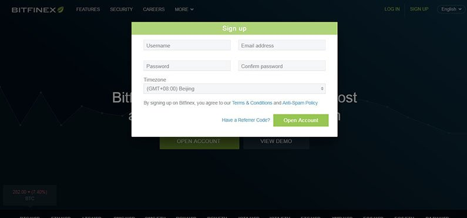2) Befizetés
Bitfinex-en figyelni kell a kis $1000 alatti befizetésekre, mert díjakat számolnak fel érte (0.0008 BTC-nek megfelelő összeg). Csak az $1000 feletti értékű kriptopénz befizetés ingyenes.
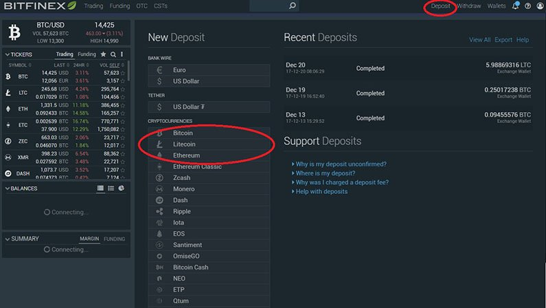Kiválasztod a kriptopénz párt amivel kereskedni szeretnél.
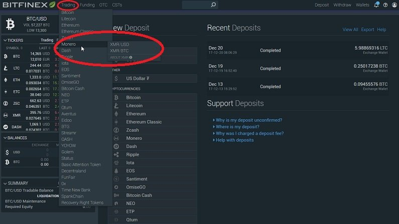3) Kriptopénz vásárlás
A pirossal jelölt lenyíló fülön kiválasztod a rendelés típusát. Kezdőknek a Market ajánlott. Az Amount mezőbe vagy beírod a vásárolni kívánt összeget, vagy a zölddel jelölt gombra kattintva az egyenlegednek megfelelő maximum mennyiséget fogja beállítani. Exchange Buy gombbal pedig elindítjuk a rendelést.
Bitfinex kereskedési díjai 0.1% és 0.2% között mozognak.
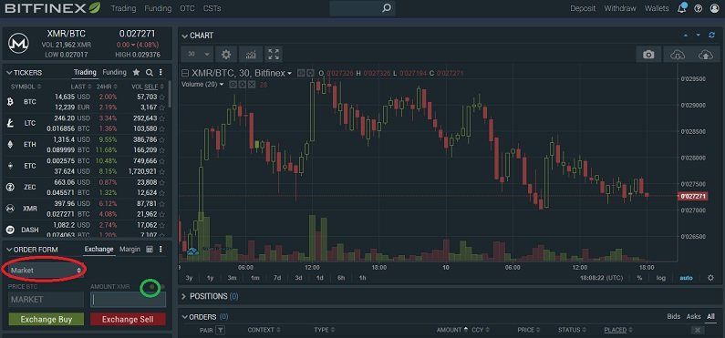Záró gondolatok
Első ránézésre talán bonyolultnak tűnik, de hamar belejön az ember. Elég egy ilyen weboldal alap logikáját megtanulni, és az összeset fogjuk tudni használni.


2018. Január 11.